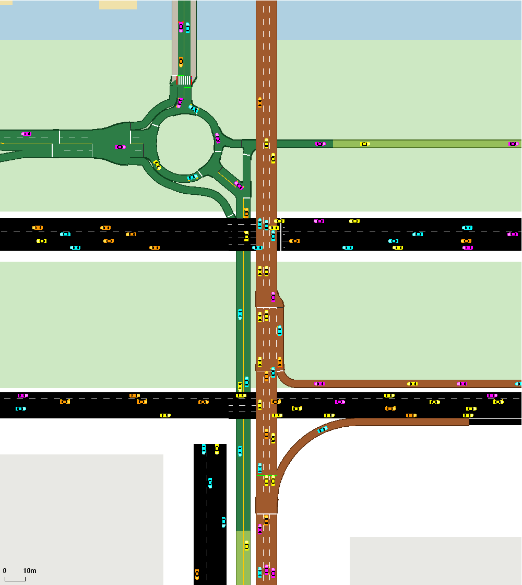
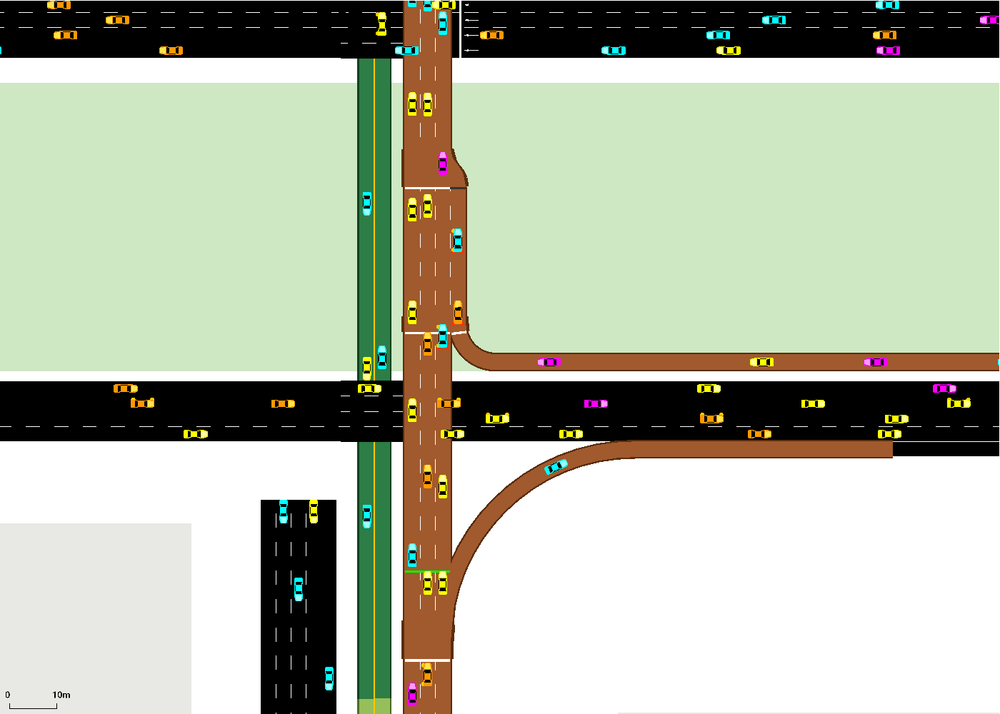

01도로
반포대교 남단~신반포사거리, 고가 · 지상 · 지하가 겹치는 구간의 SUMO 구현.

도로 선정 이유
- 다양한 도로 구조의 결합. 사거리, 회전교차로, 합류, 분기, 다중 차선, 차로 감소, 복합 교차로가 한 구간에 집중.
고가 · 지상 · 지하가 겹친 3층 입체 구조. 반포대교 직전 약 300 m 안에 합류 → 왼쪽 분기 → 차로 감소 → 오른쪽 분기 → 재합류가 연속. 잠수교행 지하차도 입구는 고가와 측도가 합쳐진 직후의 왼쪽 끝 차로 하나뿐이라, 잠수교로 가려면 580 m 앞 고가 · 측도 분기점에서 고가로 진입한 뒤 왼쪽 차로까지 이동 필요.
- 높은 교통 수요. 올림픽대로 김포 방향 7,190대/시, 반포대로 북행 2,233대/시 (통제 후 평일 낮 실측).
- 잠수교 차량 통제 (2026-10-26).
통제 대상은 잠수교 다리 위 차량 통행 하나. 지하차도, 회전교차로, 루프, 주차장은 그대로 통행 가능. 통제 뒤 반포대교 북행 교통량은 시간당 2,736대 → 2,858대로 4% 증가. 잠수교 북행 563대 중 약 22%가 반포대교로 옮겨 온 규모. 도로는 거의 그대로, 바뀌는 건 교통 수요 → 같은 자율주행차를 두 교통 상황에서 비교 가능.
도로 구현
- 모양은 직선과 곡선으로 단순하게
- 길이는 실제대로 (구간과 램프 길이는 OpenStreetMap과 로드뷰로 확인)
- 차로 수와 연결은 현실 그대로
- 입체는 평면으로, 높이는 색으로
구조 모듈과 장소
| 모듈 | 위치 | 생기는 상호작용 |
|---|---|---|
| 분기 | 고가와 측도 분기 (반포대로 6차로가 고가 2 + 측도 4) | 목적지에 맞는 길과 차로를 580 m 앞에서 선택 |
| 신호 사거리 | 신반포사거리 (강남터미널고가 밑, 중앙 버스전용차로) | 신호 정지와 진행, 직진과 좌회전, 버스, 보행자 |
| 합류와 차로 감소 | 고가 2차로와 측도 2차로가 4차로로 합쳐진 뒤 3차로로 축소 | 합류 타이밍, 차로 끝 앞 양보 |
| 왼쪽과 오른쪽 분기 | ① 잠수교 지하차도, ② 올림픽대로 하남 방향 | 반대 방향 차로 변경의 엇갈림, 분기를 놓치면 경로 이탈 |
| 램프 합류 | ③ 올림픽대로 김포 방향에서 반포대교 상층으로 | 램프 차량과 본선 차량 (통제 뒤 수요가 몰리는 곳) |
| 회전교차로 | 잠수교 남단 (반시계 1차로, 4방향)과 우회로 3개 | 회전 중인 차에 양보한 뒤 진입 |
| 엮임 (weaving) | 올림픽대로 김포 방향 260 m (루프 합류 뒤 주차장 진출) | 엇갈리는 차로 변경 |
| 버스전용차로와 정류소 | 신반포로 중앙 버스전용차로, 정류소 6곳 | 정차한 버스 피하기 |




02교통과 시나리오
원자료와 계산: environment/road/measured
현실 반영 요소
| 요소 | 내용 | 자세히 |
|---|---|---|
| 수요 | 평일 낮 실측 교통량 (통제 전 TOPIS · 후 t-data) | 통제 전은 TOPIS 교통량조사(2026년 9월), 통제 후는 t-data 실측(11/9~11)의 평일 11~15시 평균. 통제 후 반포대교 북행은 시간당 2,736대 → 2,858대로 증가, 통제 전 잠수교 + 반포대교 교통량 합보다는 적은 수준. 출처가 다른 이유: TOPIS 월별 조사자료는 통제 전 기간까지만 공개되어 통제 후는 최근 며칠 기록을 주는 t-data 사용. t-data는 최근 기록만 보관하므로 통제 전은 TOPIS 사용. |
| 신호 | C-ITS 신호 기록 5곳, 실제 주기 그대로 | C-ITS 신호제어기의 1초 간격 기록을 통제 전(10/21) · 통제 후(11/11) 평일 기준으로 분석. 신반포사거리, 북행 횡단보도, 반포대교남단은 170초 주기로 연동. 잠수교 쪽 2곳은 75초 주기에서 통제 뒤 점멸로 전환. |
| 버스 | 공식 노선 34개 · 배차 간격 · 정류소 6곳 | 범위 안 정류소 6곳을 지나는 노선 전부를 공식 자료에서 찾아 배차 간격과 정차를 그대로 반영. 740번 · 405번은 통제 뒤 반포대교로 우회. |
| 보행자 | 횡단보도 7곳, 보행 신호에 맞춰 횡단 | 횡단보도마다 보행자가 보행 신호를 기다렸다가 횡단. |
| 차량 | Krauss · IDM · EIDM · ACC 4종 혼합 | 배경 차량은 수업 코드의 차량 모델 4종 혼합. 기다릴수록 과감하게 끼어드는 성향(impatience 0.5)으로 회전교차로와 합류의 흐름 유지. 차종(대형차) 비율은 실측 자료 부재로 한계에 포함. |
AV 경로 5개
도로망은 하나. 통제 전 · 후의 차이는 수요, 버스 경로, 잠수교 통행 여부. 출발지는 1 올림픽대로, 2 신반포로, 3 반포대로, 출발 차로는 무작위.
| 경로 | 시나리오 | 출발지 | 길 | 상호작용 |
|---|---|---|---|---|
goga-jamsu | 통제 전 | 3 | 고가 → 지하차도 → 회전교차로 → 잠수교 | 지하차도 분기 차로 선택, 회전교차로 진입 양보 |
oly-jamsu | 통제 전 | 1 | 올림픽대로 → 램프 → 회전교차로 → 잠수교 | 램프 엮임 구간 차로 변경, 회전교차로 진입 양보 |
side-banpo | 통제 후 | 3 | 측도 → 신반포사거리 → 반포대교 | 신호 교차로 통과, 직진 차로 골라 들어가기, 합류 양보 |
goga-banpo | 통제 후 | 3 | 고가 → 합류 → 반포대교 | 합류 + 차로 감소 구간 끼어들기, 양보 |
sbr-banpo | 통제 후 | 2 | 신반포로 → 우회전 → 반포대교 | 짧은 거리 안 오른쪽 차로 변경, 우회전 |
03AV 학습
출발 차로는 무작위, 갈 차로는 정책이 직접 선택.
Observation (49)
| 구성 | 차원 | 내용 |
|---|---|---|
| 수업 원본 | 31 | 내 속도, 주변 5개 차로의 앞뒤 차, 연결성, 밀도 |
| 경로 | 4 | 다음 분기 2개의 방향과 거리 |
| 진행 방향 | 4 | 내 차로가 분기에서 어느 쪽으로 가나 |
| 신호 | 3 | 앞 신호 색, 정지선 거리, 남은 시간 |
| 경합 차량 | 4 | 교차로와 합류에서 마주칠 차 |
| 제한속도 | 3 | 지금 제한속도, 다음 제한속도와 거리 |
Action
가감속, 차로 변경 (왼쪽, 유지, 오른쪽). 속도 명령의 상한은 수업 원본과 같은 차 최고속도. 제한속도 준수, 신호 대기 중 정차와 재출발 모두 AV의 판단.
Reward
| 항목 | 조건 | 값 |
|---|---|---|
| 속도 | 제한속도까지 빠를수록 (속도 / 제한속도, 최대 1) | +0.1 |
| 과속 | 제한속도를 넘은 비율만큼 (10% 넘으면 −0.05) | −0.5 |
| 근접 | 5 m/s 이상에서 앞차와 6 m 안으로 근접 | −0.1 |
| 접근 | 같은 차로 앞차와 충돌까지 2초 미만 | −0.2 |
| 도착 | 목적지 도착 | +2 |
| 실패 | 충돌, 신호 위반, 120 s 정지, 경로 이탈 | −20 |
신호 위반 기준. 정지선을 넘어 교차로에 들어선 순간 자기 진행 방향 신호가 빨간불이면 신호 위반. 황색 신호에 진입한 건 정상 통과. 120 s 정지 시간에서 빨간불 대기는 제외.
학습 방법
- 규칙 기반 선생님. 관측만 보고 운전하는 규칙 운전자(IDM). 학습용 정답 행동 생성.
- 모방학습 BC + DAgger. 선생님 시범 모방, 흔들린 주행에는 선생님 정답 재부여.
- 모방학습 감속 가중치 BC. 신호와 합류 앞처럼 드문 감속 장면에 큰 손실 가중치.
- 강화학습 선생님 보정 PPO. 보상으로 학습, 업데이트마다 선생님 정답으로 BC 한 번 추가.
상한을 뺀 환경에서 이어서 학습. 처음 환경은 속도 명령을 제한속도로 자르는 방식(U5). 이후 이 상한을 빼고 과속 감점을 넣은 환경에서 같은 방식으로 이어서 학습. VA는 U5에서 36.8만 스텝 학습, 선별 기준 최고 저장 시점은 16.4만. VA2는 VA 학습 끝 모델에서 다시 이어서 학습, 26.2만 시점이 최종 모델.
모델 평가. 저장 모델들은 선별용 250판으로 비교, 평가 전용 시드 1,000판으로 한 번 평가해 최종 모델 결정.
모델 변천 과정
총 59개 모델. BC에서 시작해 PPO로 전환, 속도 상한 환경의 최종 모델 U5(도착 98.8%, 충돌 0.8%)를 상한을 뺀 환경에서 VA → VA2로 이어서 학습. 최종 모델은 VA2(도착 97.6%, 충돌 0.6%).
모델 59개 전체 보기
| # | 모델 | 종류 | 평가 판 | 도착 | 충돌 |
|---|---|---|---|---|---|
| 1 | bc_1116 | BC | 50 | 28.0% | 72.0% |
| 2 | bc_1116_cap5 | BC | 50 | 26.0% | 72.0% |
| 3 | bc_1117_f0 | BC | 150 | 94.0% | 1.3% |
| 4 | bc_1117_f1 | BC | 1,000 | 95.6% | 0.0% |
| 5 | bc_1117_r0 | BC | 150 | 96.0% | 1.3% |
| 6 | bc_1117_r1 | BC | 150 | 92.0% | 1.3% |
| 7 | bc_1117_s0 | BC | 150 | 96.7% | 0.0% |
| 8 | bc_1119_g0 | BC | 150 | 84.0% | 8.7% |
| 9 | bc_1119_g1 | BC | 150 | 89.3% | 2.0% |
| 10 | bc_1119_g2 | BC | 996 | 94.9% | 1.0% |
| 11 | bc_1119_g2b10 | BC | — | — | — |
| 12 | bc_1119_g2b4 | BC | 996 | 95.6% | 0.4% |
| 13 | bc_1119_g2b4n | BC | 996 | 95.5% | 0.7% |
| 14 | bc_1119_g3 | BC | 150 | 88.0% | 0.7% |
| 15 | bc_1119_g4 | BC | 150 | 85.3% | 1.3% |
| 16 | bc_1119_h0 | BC | 150 | 87.3% | 6.7% |
| 17 | bc_1119_i0 | BC | 150 | 85.3% | 6.7% |
| 18 | bc_1119_i0s | BC | 50 | 86.0% | 2.0% |
| 19 | bc_1119_r8b4n | BC | 998 | 98.1% | 0.9% |
| 20 | bc_1119_r8b4n3 | BC | 50 | 100.0% | 0.0% |
| 21 | bc_1119_r8b4nh2 | BC | 196 | 93.9% | 1.5% |
| 22 | bc_1119_r8b4nh5 | BC | 196 | 92.3% | 1.5% |
| 23 | rl_1117_A1 | PPO | 150 | 78.0% | 18.7% |
| 24 | rl_1117_B1 | PPO | 150 | 87.3% | 10.7% |
| 25 | rl_1117_C1 | PPO | 150 | 50.0% | 30.0% |
| 26 | rl_1117_D1 | PPO | 150 | 88.7% | 3.3% |
| 27 | rl_1118_E1 | PPO | 1,000 | 99.2% | 0.0% |
| 28 | rl_1118_E2 | PPO | 150 | 88.0% | 12.0% |
| 29 | rl_1118_F1 · 43.4만 | PPO | 150 | 96.7% | 0.7% |
| 30 | rl_1118_F2 · 33.6만 · 차로 유지 최종 | PPO | 1,000 | 99.3% | 0.0% |
| 31 | rl_1118_G1 | PPO | 1,000 | 99.1% | 0.3% |
| 32 | rl_1118_G2 | PPO | 150 | 96.7% | 3.3% |
| 33 | rl_1118_H1 · 6.1만 | PPO | 150 | 100.0% | 0.0% |
| 34 | rl_1118_H2 · 24.5만 | PPO | 1,000 | 99.6% | 0.1% |
| 35 | rl_1118_J1 · 22.5만 | PPO | 1,000 | 98.7% | 0.0% |
| 36 | rl_1118_J2 · 22.5만 | PPO | 150 | 97.3% | 0.0% |
| 37 | rl_1118_J3 | PPO | 150 | 96.0% | 4.0% |
| 38 | rl_1118_K1 · 45.0만 | PPO | 150 | 97.3% | 0.0% |
| 39 | rl_1119_L1 | PPO | — | — | — |
| 40 | rl_1119_L2 | PPO | 996 | 96.9% | 0.9% |
| 41 | rl_1119_P1 · 22.9만 | PPO | 996 | 97.0% | 0.6% |
| 42 | rl_1119_P2 · 20.5만 | PPO | 996 | 95.9% | 1.5% |
| 43 | rl_1119_Q · 39.2만 | PPO | 996 | 96.1% | 1.5% |
| 44 | rl_1119_R | PPO | — | — | — |
| 45 | rl_1119_S · 51.5만 | PPO | 996 | 97.9% | 1.1% |
| 46 | rl_1119_T1 · 23.7만 | PPO | 996 | 98.5% | 1.0% |
| 47 | rl_1119_T2 · 31.1만 | PPO | 996 | 98.4% | 0.8% |
| 48 | rl_1119_T3 · 53.1만 | PPO | 996 | 98.0% | 1.4% |
| 49 | rl_1119_T4 | PPO | 996 | 98.0% | 1.1% |
| 50 | rl_1119_T5 · 11.4만 | PPO | 996 | 97.8% | 1.4% |
| 51 | rl_1120_U1 · 19.6만 | PPO | 996 | 98.5% | 0.9% |
| 52 | rl_1120_U2 | PPO | 996 | 97.3% | 1.3% |
| 53 | rl_1120_U3 · 16.3만 | PPO | 996 | 98.5% | 0.6% |
| 54 | rl_1120_U4 · 34.3만 | PPO | 996 | 98.6% | 0.6% |
| 55 | rl_1120_U5 · 26.2만 · 상한 환경 최종 | PPO | 1,000 | 98.8% | 0.8% |
| 56 | rl_1120_U5avg | PPO | 200 | 98.5% | 0.0% |
| 57 | rl_1124_VA · 16.4만 | PPO | 250 | 99.2% | 0.8% |
| 58 | rl_1124_VB · 31.1만 | PPO | 250 | 97.6% | 0.8% |
| 59 | rl_1125_VA2 · 26.2만 · 최종 | PPO | 1,000 | 97.6% | 0.6% |
각 줄은 학습마다 가장 많은 판, 가장 좋은 저장 시점 기준. 판 수와 경로가 줄마다 달라서, 비교는 같은 평가 조건끼리.
04주행 결과
최종 모델 results/team_rl_1125_VA2/model_261632.pt를 새 시드 1,000판(5개 경로 × 200판, 판 800~999) 평가. 출발 차로 무작위, 안전장치 끔. 전체 결과: 최종 평가 보고서
실패는 1,000판 중 24판. 충돌 6, 신호 위반 13, 시간초과 5, 오류 0.
경로별
| 경로 (각 200판) | 도착 | 충돌률 | 신호 위반 | 시간초과 | 순간이동 · 오류 |
|---|---|---|---|---|---|
통제 전goga-jamsu | 97.5% | 0.0% | 5 | 0 | 0 |
통제 전oly-jamsu | 94.0% | 2.5% | 7 | 0 | 0 |
통제 후side-banpo | 96.5% | 0.5% | 1 | 5 | 0 |
통제 후goga-banpo | 100% | 0.0% | 0 | 0 | 0 |
통제 후sbr-banpo | 100% | 0.0% | 0 | 0 | 0 |
| 합계 (1,000판) | 97.6% | 0.6% | 13 | 5 | 0 |
주행 영상
최종 모델, 경로마다 가장 어려운 출발 차로에서 상호작용이 많은 판. 모두 3배속, 도착 장면까지 포함.
goga-jamsu, 판 0). 맨 오른쪽 차로에서 출발해 580 m 안에 왼쪽 끝 차로까지 다섯 번 옮겨 지하차도로 진입.oly-jamsu, 판 39). 회전교차로에서 먼저 돌고 있는 차에 양보한 뒤 진입.side-banpo, 판 6). 신반포사거리 신호 대기 후 옆 차로 차들과 나란히 합류 구간 통과.goga-banpo, 판 37). 차로를 네 번 옮겨 ③ 램프 합류 앞에서 반포대교 쪽 차로로 진입.sbr-banpo, 판 31). 우회전 도로에서 본선 합류 시 본선 차에 양보.SUMO 기본 운전자와 비교
| 경로 | 주행 시간 (s) | SUMO 운전자 (s) | 앞차 최소 간격 (m) | SUMO 운전자 (m) |
|---|---|---|---|---|
goga-jamsu | 224.6 | 216.0 | 14.5 | 8.5 |
oly-jamsu | 251.9 | 236.1 | 13.0 | 8.9 |
side-banpo | 305.5 | 253.5 | 11.8 | 6.7 |
goga-banpo | 128.2 | 124.5 | 11.9 | 7.5 |
sbr-banpo | 136.5 | 125.2 | 12.4 | 7.5 |
주행 시간과 간격은 도착한 판의 평균. 비교 대상은 같은 출발 조건에서 SUMO 기본 운전자 모델이 같은 경로를 달린 값.
학습한 차는 앞차와 간격 4~6 m 더 확보, 그만큼 도착 시간은 조금 증가.
차이가 가장 큰 경로는 측도 출발 side-banpo. 원인은 신반포사거리 빨간불 평균 88초 대기.
과속
과속은 통과 기준과 별도로, 넘은 폭별 비율 전부 공개.
1,000판 전체 416,916스텝 중 차로 제한속도를 조금이라도 넘은 스텝은 1.761%.
대부분은 제한속도에 붙어 1~2 km/h 위로 달린 경우. 교차로 안쪽 차로도 집계에 포함.
| 구분 | 초과 > 0 km/h | > 1 km/h | > 2 km/h | > 5 km/h | 최대 초과 (km/h) |
|---|---|---|---|---|---|
| 전체 | 1.761% | 0.429% | 0.175% | 0.017% | 9.842 |
goga-jamsu | 2.183% | 0.333% | 0.195% | 0.029% | 7.690 |
oly-jamsu | 3.436% | 0.604% | 0.176% | 0.019% | 8.734 |
side-banpo | 0.700% | 0.412% | 0.220% | 0.019% | 9.842 |
goga-banpo | 1.601% | 0.645% | 0.175% | 0.000% | 4.518 |
sbr-banpo | 0.604% | 0.104% | 0.040% | 0.000% | 4.323 |
비교 기준은 환경이 속도를 제한속도로 잘라 주던 이전 최종 모델(U5)의 같은 규모 평가 결과(도착 98.8%, 충돌 0.8%).
상한 제거 후 재학습 결과, 도착률 1.2%p 하락, 충돌률은 비슷한 수준.
05수집 데이터
최종 모델의 두 시나리오, 5개 경로 주행 기록. Hugging Face에서 받기
① 항목
수업 기본 19칼럼 전부 유지 + 기존 칼럼에 없는 정보 6개 추가.
| 칼럼 | 단위 · 형식 | 의미 | 필요한 이유 |
|---|---|---|---|
sim_time | s | 관측 시점의 시뮬레이션 시각 | 신호 5곳이 고정 주기라 이 값으로 모든 신호 상태를 복원 |
ego_route | 정수 0–4 | AV 경로 (5개 중 하나) | 같은 도로에서 출발하는 경로들을 분기 전부터 목적지별로 구분 |
end_reason | 정수 0–8 (판 마지막 행) | 판이 끝난 이유 | 정지, 경로 이탈, 순간이동, 신호 위반 구분 |
signal_tls | 정수 (없음 −1) | AV가 다음에 만날 신호 | 신호 상태 기록 (수업 요구: 신호를 쓰면 State에 신호 상태 추가) |
signal_state | 녹 1 · 황 0.5 · 적 0 · 없음 −1 | 그 신호의 지금 색 | 위와 같은 요구 |
signal_remaining_s | s (없으면 빈 값) | 그 색이 바뀔 때까지 남은 시간 | 실제 초 단위 값 |
② 규모 · 조건
- 수집 조건. 최종 모델 단독 주행, 안전장치 끔, 무작위 출발 차로, 5경로 무작위, 실측 수요 100%
- 시드. 판마다 SUMO 시드 직접 지정 → 26,000판 전부 서로 다른 교통 (중복 0 검증)
- 저장 구조. 묶음마다 JSONL.gz (수업 형식,
next_*는 판 마지막 행만) + NPZ (학습용 배열)
정확한 값: 10,844,678행, 136.6 GB(JSONL.gz 26개 135.5 GB, NPZ 26개 1.1 GB). 도착 25,375판, 충돌 190판(0.73%), 신호 위반 300판, 시간초과 115판, 정지 20판. 관측 결측(NaN) 0, 건너뛴 판 0, 중복 궤적 0. 한 행 = 한 스텝(0.5초).
경로별
| 경로 | 판 | 행 | 도착 | 충돌 |
|---|---|---|---|---|
통제 전goga-jamsu | 5,141 | 2,281,313 | 96.77% | 0.53% |
통제 전oly-jamsu | 5,291 | 2,600,655 | 94.08% | 2.40% |
통제 후side-banpo | 5,250 | 3,232,600 | 97.50% | 0.40% |
통제 후goga-banpo | 5,208 | 1,330,369 | 99.79% | 0.21% |
통제 후sbr-banpo | 5,110 | 1,399,741 | 99.92% | 0.08% |
06문제와 해결
구축과 학습 과정에서 발견한 문제와 해결 과정.
| 문제 | 원인 | 해결 | 결과 |
|---|---|---|---|
| 몇 시간 뒤 회전교차로 교착 | 램프 차량이 회전 차량에 끝없이 양보 → 대기열이 고리를 막아 순간이동 발생 | 배경차 impatience 0.5 (기다릴수록 과감히 진입) | 4시간 교착 0, 잠수교 북행 −34% → −2.5% |
| 차로만 유지하는 AV가 14초 만에 "도착" | SUMO는 충돌로 사라진 차도 도착 목록에 포함 | 도착 = 충돌 없이 경로 끝에서 빠져나간 경우로 한정, 실패는 원인별로 따로 판정 (end_reason) | 신뢰할 수 있는 도착 · 충돌 수치 |
| 수집이 초당 1~2 스텝, 10⁷개에 수 일 | 수업 코드는 매 스텝 차량 약 450대의 값을 한 대씩 SUMO에 조회 (스텝당 약 3,000번 통신) — 시간의 89% | 구독: 처음 한 번 등록 후 매 스텝 전체 값을 한 번에 수신. libsumo: SUMO를 파이썬 안에서 직접 불러 통신 단계 제거 | 212 s → 11 s (약 19배), 데이터 바이트 단위 동일 |
| BC가 신호 대기 줄에서 계속 추돌 | 시범 운전자(SUMO)가 앞차 뒤 정확히 2.50 m(충돌 판정 경계)에 정지, 관측 밖 정보(SUMO 내부값)로 운전 | 관측만 보는 규칙 운전자(IDM)로 선생님 교체 | BC 도착 26% → 96% |
| PPO를 돌릴수록 도착률 하락 | 작은 실패 벌점(5) 때문에 도착 88.7% 모델의 리턴 > 96% 모델의 리턴 | 실패 벌점 5 → 20 | 리턴 순위 = 평가 순위 |
부록실행법
필요 환경: Python 3.14 (3.11도 가능), SUMO 1.27.1. 명령은 저장소 루트에서 실행. 자세한 내용: README
git clone https://github.com/skku-aicad-2026-team12/banpo-av.git
cd banpo-av
python -m pip install -r requirements.txt
# 도로망 생성과 검증
python -X utf8 environment/road/build_net.py
python -X utf8 environment/road/check_net.py # 마지막 줄 "결과: 통과"
# 최종 모델 평가 (5개 경로 × 200판)
python -X utf8 evaluation/baseline.py --model results/team_rl_1125_VA2/model_261632.pt \
--episode-start 800 --episodes 200 --depart-lane random --depart-speed limit --safety off --name final_VA2_261632
# 데이터 수집
python -X utf8 data_collection/collect_pomdp_data.py --model results/team_rl_1125_VA2/model_261632.pt \
--safety off --depart-lane random --depart-speed limit --episodes 10 --out-dir data/demo --name demo부록한계
- 이전 모델(U5)의 실패 판을 같은 시드로 규칙 정책(선생님)에게 돌린 결과, 선생님도 대부분 실패. 가장 흔한 경우는 녹색 끝 무렵 정지선 앞 늦은 감속. 좌회전 전용 차로에 갇힌 판, 회전교차로에서 틈을 기다리다 시간이 다 간 판도 존재. 최종 모델(VA2) 평가 1,000판 중 선생님과 모델이 둘 다 실패한 판은 2판(
side-banpo판 868은 둘 다 시간초과,oly-jamsu판 891은 선생님 정지 · 모델 신호 위반). - 도착률이 가장 낮은 경로는
oly-jamsu(94%). 실패 12판의 내역은 충돌 5판, 신호 위반 7판. - 가장 큰 과속(약 10 km/h)이 나오는 위치는 회전교차로 안쪽 차로, 그리고 제한속도가 낮아지는 지점 바로 뒤. 원인은 관측의 "다음 제한속도"가 보는 범위가 일반 도로 구간까지라는 점.
- 신반포로 → 반포대교 경로의 출발 차로는 0 · 1번. 2번 차로 출발 시 규칙 정책도 길을 찾다 멈춰 서는 문제.
- 수요는 평일 11~15시 평균 하나. 출퇴근 같은 혼잡 시간대 학습과 평가는 추후 과제.
부록발표자료
최종발표 자료(16쪽). PDF 보기 (Google Drive)